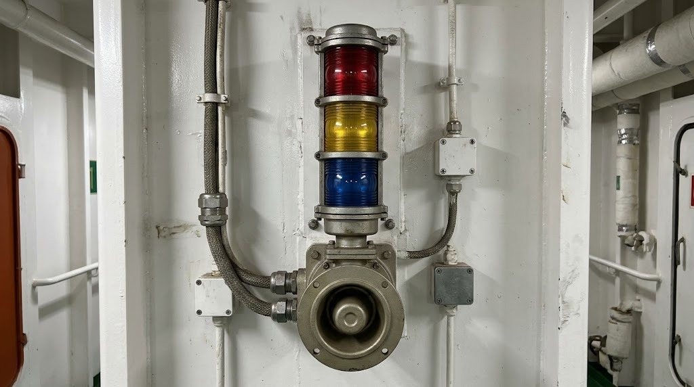

Listen · Alarm signals
Listen to the alarm and say which signal it is.
Tap the round button to play it - as often as you like. The patterns are as on the training ship.

Signal 1 of 4
Play
Live signal
low pitch
level by pitch
high pitch
Check my answer